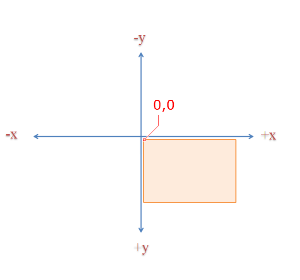
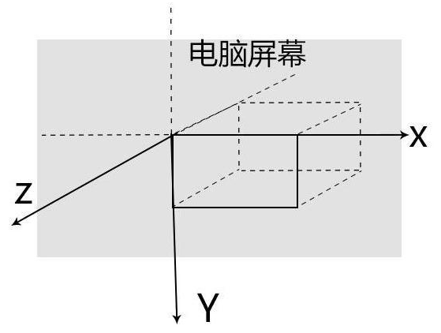
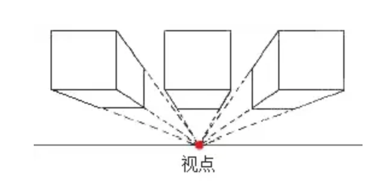
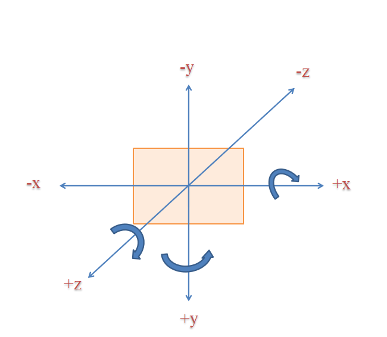
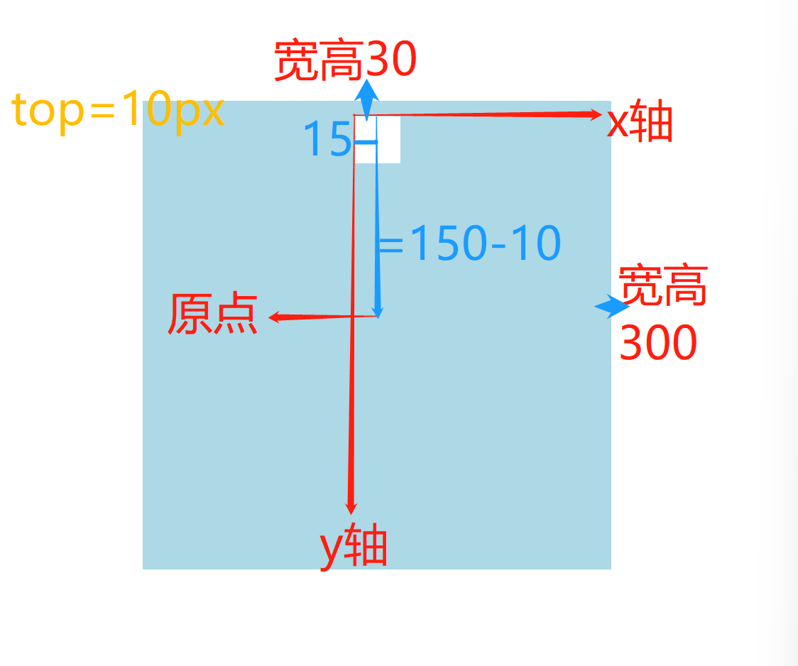

margin负值的最佳实践
一、margin负值特性
- margin-left设置负值时，元素自身向左移动，后面的元素也向左移动
- margin-right设置负值时，自身不受影响，右边元素向左移动
- margin-top设置负值时，元素自身向上移动，下面的元素也向上移
- margin-bottom设置负值时，自身不受影响，下方元素向上移动
right和bottom设置负值时，就像是在页面上减小了占位，后面的元素随之补上，但实际上占位并没有变
二、margin塌陷时合并规则
- ==口诀==：符号相同时，看绝对值，听老大的；符号不同时，相加减
介绍
- margin重叠也叫塌陷、合并、床头
- 只针对垂直方向，不针对水平方向
分两种情况- 兄弟元素之间：上下外边距重叠
- 父子元素之间：上下外边距合并(父元未设置内边距和边框时)
- 应用场景和最佳实践
- 等高布局-左右布局：不管做左边盒子中内容多少，其高度都会随右边的粉色盒子变高
- 给左边盒子，用==正值==pdding-bottom增加盒子高度，并且加相同值的==负值==的margin-bottom抵消内边距的占位
- 给父盒子加overflow-hidden
- 一行多列网格布局
- margin-left:-1px;使边框重叠在一起
- 头像叠加效果
- 先让每个子盒向左移动负外边距
- 然后单独修改第一个盒子的左外边距
- 元素水平垂直居中
- 先利用绝对定位使子盒子移动父盒子宽高的一半
- top:50%、left:50%
- 再利用负外边距使子盒反向移动自身宽高的一半
- 一定给父盒子加相对定位
- 圣杯布局
圆角、阴影、文本图像处理、CSS函数
一、圆角
- 简介
border-radius用来设置元素的(4个方向)外边框1/4圆角效果
圆角类型 描述 举例 圆角边框 当使用一个半径时，确定一个圆，表示四个不同方向上边框圆角的半径大小 border-radius:50px; 椭圆边框 当使用两个半径时，确定一个椭圆；两个半径之间用==反斜杠==/分隔，第一个值是水平半径，第二个值是垂直半径 border-radius:50px/30px; 圆角效果：是从边框四个角出发，根据半径得到圆心，与四条边相交，得到的1/4圆角
圆的4种不同值写法：顺时针方向
属性值 举例 说明 单值写法 border-radius:50px; 上右下左四个方向的圆角半径 双值写法 border-radius:30px 40px; 斜对角；第一个值：左上角和右下角；第二个值：右上角和左下角 三值写法 border-radius:30px 50px 80px; 分别表示：左上角，右上角和左下角，右下角； 四值写法 border:10px 20px 30px 40px; 分别表示：左上角，右上角，右下角，左下角 椭圆的4种不同值的写法
属性值 举例 说明 单值写法 border-radius:50px/30px; 50px表示四个不同方向椭圆的水平半径，30px表示四个不同方向椭圆垂直半径 双值写法 border-radius:10px 20px/30px 50px; 斜对角；左上角和右下角：水平半径10px，垂直半径30px；右上角和左下角：水平半径30px，垂直半径50px 三值写法 border-radius:30px 50px 60px/20px 30px 50px; 分别表示：左上角30px/20px，右上角和左下角50px/30px，右下角60px/50px； 四值写法 border:10px 20px 30px 40px/40px 30px 20px 10px; 分别表示：左上角10px/40px，右上角20px/30px，右下角30px/20px，左下角40px/10px 百分比表示法
- 百分比是相对于当前元素的==可视宽高==而言的
- 水平半径相当于元素的可视宽而言，水平半径=(width+padding+border)*百分比
- 垂直半径相当于元素的可视高而言，垂直半径=(height+padding+border)*百分比
- 单独设置四个方向圆角-小属性
- 此时，写一个值表示圆，写两个值表示椭圆，==并且椭圆==的两个值不需要用反斜杠分隔
- 先上下后左右
- 主要是用来层叠大属性的
属性 描述 border-top-left-radius 左上角 border-top-right-radius 右上角 border-bottom-left-radius 左下角 border-bottom-right-radius 右下角
左上角椭圆：
border-top-left-radius:30px 40px;
右下角圆：
border-bottom-right-radius:30px;
二、盒子阴影
box-shadow给盒子添加阴影效果，阴影是不占空间的
- 写法：
box-shadow:[inset] X偏移 Y偏移 模糊半径 [扩散半径] 颜色;(右和上为正值方向) []：表示这个值可以省略不写- inset:表示内阴影，当需要设置内阴影时，才添加
- X偏移:阴影在x轴(水平)方向偏移量；正值表向右偏移，负值表向左偏移
- Y偏移:阴影在Y轴(垂直)方向偏移量；正值表向上偏移，负值表向下偏移
- 模糊半径：值只能大于等于0，表示阴影的模糊半径
- 扩散半径：取正值表示阴影扩大，取负值表示阴影收缩。默认为0，此时阴影与元素同样大
- 颜色表示阴影的颜色
- 简单阴影
box-shadow:x偏移 y偏移 模糊量 颜色；
- 阴影扩展
box-shadow:x偏移 y偏移 模糊量 扩散半径 颜色；
- 内阴影
box-shadow:inset X偏移 Y偏移 模糊半径 扩散半径 颜色;
- 多个阴影
- 如果一个盒子有多个阴影，则每个阴影之间用
,分隔 - 当阴影个数
>1时，阴影应用顺序为从前往后(z轴)，第一个指定阴影在最顶部显示 - 内阴影不管写在哪个位置，都会在外阴影上面
- 去掉阴影
box-shadow:none;
- 实战案例-纸张效果
三、文本阴影
text-shadow用来为文字添加阴影text-shadow:X偏移 Y偏移 模糊半径 颜色;- 多个阴影之间用逗号分隔
- 当阴影个数
>1时，阴影应用顺序从前到后，第一个指定阴影在最顶部显示
四、文本溢出显示省略号
- 单行文本溢出显示省略号
- 写法：
<!-- 文字不换行 -->
white-space:nowrap;
<!-- 超出显示省略号 -->
text-overflow:ellipsis;
<!-- 超出部分隐藏 -->
overflow:hidden;
- 多行文本溢出显示省略号
<!-- 超出部分隐藏 -->
overflow:hidden;
<!-- 超出显示省略号 -->
text-overflow:ellipsis;
<!-- 对象作为弹性盒子模型显示 -->
display:-webkit-box;
<!-- 快容器中的内容限制为指定行数 -->
-webkit-line-clamp:2;
<!-- 弹性盒子对象的子元素排列方式为竖排 -->
-webkit-box-orient:vertical;
注意：只有当元素的高=
line-height大小*-webkit-line-clamp时，才能显示出正确的效果
- 所以，一定要写行高，盒子高度根据行高和指定显示行数来设置，例如想让行高为25px的两行文字显示，则盒子高度为50px。
五、元素不透明度
opacity指定了一个元素的不透明度值 描述 0 元素完全透明(即元素不可见) 0.0~1.0之间 元素半透明(元素背后的背景可见) 1 元素完全不透明(元素后面的背景不可见) 如果超出0.0~1.0的范围，也会有效，但是会被解析为在取值范围内==最靠近==他的值|
可以用
opacity:0隐藏一个元素，因为opacity会让这个元素及其子元素一起透明。当
opacity的属性值不为1时，元素会创建自己的层叠上下文
对比学习
属性 说明 visibility:hidden隐藏元素，但元素还占着原有的空间，在DOM树中 display:none元素隐藏，不站着原来的空间，不在DOM树中 background-color:rgba(0,0,0,0.1)仅背景颜色透明，并不影响元素中的内容 opacity:0;元素透明，连同其内容和子元素一起透明掉 overflow:hidden内容超出部分隐藏，影响的是子元素
六、filter滤镜-图片模糊
filter:blur()函数用于将高斯模糊效果应用于元素(图像)
- 单位是px
- 可以利用
filter:blur与background-size的结合来实现背景模糊效果- 将背景放大到150%，然后模糊。参考艾编程官网老师们的简介
七、object-fit 图片裁剪
- 指定==可替换元素==的内容应该如何适应到其使用的高度和宽度确定的框
- 典型的可替换元素包括：img、video、iframe、embed
- 这个效果类似于
background-size- 但
object-fit在对齐时，是从元素框中间向两边的方式来填充 - 而
background-size默认是是从左上角向右下角来填充，如果想设置以中间向两边，需要设置background-position:center
- 但
|属性值|描述|
|contain|被替换的内容将被缩放，保持元素的宽高比，全部填充在内容框内|
|cover|被替换的内容将被缩放，保持元素的宽高比****，填满**整个内容框|
|fill|默认效果，被替换的内容正好填充元素的内容框，内容可能会被拉伸或压缩变形|
|none|被替换的内容保持其原有的尺寸|
|scale-down|内容的尺寸与none或contain中的一个相同，取决于他们两个之间谁得到的对象尺寸会更小一些|
- 应用：防止图片拉伸或挤压-用户头像
- 父盒子设置宽高
- 图片宽高设置100%全适应
- 添加
object-fit:cover来等比例裁剪图片尺寸
八、防止拖拽文本域
- resize属性规定是否可让用户调整元素的尺寸
textarea表示多行文本框，拖动它的右下角可调整尺寸- 写法：
textarea:none;
九、calc函数
- 用于动态计算长度值
- 写法：
width:calc(100px + 200px); - 使用要点：
- 支持
+、-、*、/运算 - 运算符前后都需要保留一个空格，否则不生效，
*、/可以没有空格，但建议有 - 任何长度值都可以使用calc()函数进行计算
- 可以使用百分比、px、em、rem等单位
- 使用标准的数学运算优先级规则
- 支持
十、var函数
:root选择器
- 用于匹配文档的htmlm根元素
- 与html选择器的区别在于：
:root选择器的优先级要高于html标签选择器
- var函数解读
- var函数用于插入自定义的属性值
- 如果一个属性值在多处被使用，该方法就很有用
- 自定义属性一定要以
--开头 - ==就近原则==，自定义属性会沿着父元素一直往外找，以最近找到的为主
- 应用场景：
- 通常自定义属性值是写在:root选择器中，并且:root选择器会放在css的最上面，这样所有选择器就能用到这个自定义变量属性
- 写法：
:root{
<!-- 自定义属性 -->
--font-color:red;
}
h3{
color:var(--font-color);
}
十一、专项案例训练
- CSS开发天猫登录注册页
没想到的地方
- 天猫logo和登录框放在一个盒子里居中
- 表单元素：
option、input - 区号部分：
- select：背景为选择图标，字体颜色设置为透明，宽高设置为图标大小
- option：字体颜色为黑色
<dix class="box">
<i>+86</i>
<select name="" id="">
<option value="+86">+86中国大陆</option>
</select>
</div>
pointer-events:none;：盒子不受指针、click的影响- span标签之间的间隙：父盒子font-size=0；
- 有些地方可以用怪异盒模型
- 最后一行可以用
text-align:right水平居右，还有cursor:pointer
需要用到JS的地方
- 区号，i绑定ption的value
- 登录方式的切换
- CSS表格布局(QQ音乐排行榜效果)
老师做的：
- 用table标签
- 边框处理：缩小边距——
border-spacing:0,边框重合——border-collapse:collapse - 不同列单独设置：在table和tr之间写上下面的代码，span表示选多少列，class是各列的类名
<table>
<colgroup>
<col span="" class="">
</clogroup>
- 滑动效果：歌名变色，出现三个按钮，歌曲介绍有省略号
- 三个按钮用display
- 省略号：滑动之后宽度缩短，并用单行文本溢出省略代码
- 第三列不能设置宽度，自适应。用right、left
transtion过渡动画与animation自定义动画
一、transition过渡动画
如何理解过渡动画？
- 一个元素由A状态经过一段时间变化成B状态。我们只需要定义其开始和结束的状态
- 而它中间的状态会自己添加”补间动画”
- 以前，网页的特效基本都是由JS定时器实现的，现在追捕改为使用CSS3过渡
- 优点：动画更细腻，内存开销小
- 兼容性：移动PC都兼容，但是需要加上对应的浏览器前缀
过渡动画何时发生？ - 当属性值发生变化时，才会触发transition动画
- transition动画主要与
:hover配合，来实现鼠标滑动动画效果
- 基本语法
transition:transition-property transition-duration [transition-timing-function] [transition-delay];- 后面两个可以省略不写
| 属性 | 描述 |
|---|---|
transition-property |
指定CSS属性的name，哪些属性要过渡 |
transition-duration |
transition效果需要指定多少秒或毫秒才能完成，动画时间 |
transition-timing-function |
指定transition效果的转速曲线，变化曲线 |
transition-delay |
定义transition效果开始的时候(延迟时间) |
- 可参与过渡的属性
可参与过渡的属性
- 所有数值类型的属性，都可参与过度
- 比如：width、height、left、top、border-radius、font-size、opacity
- 背景颜色和文字都可以被过渡
- 所有的变形(包括2D和3D)都能被过渡
- 在CSS中90%的属性都可以辈过渡
不能参与过渡动画的属性
- float和position
- display无法过渡
- font-family等
- 特殊属性：all
- 需要所有属性参与过渡，即定义为all
- all不要随意使用，会引发效率问题，如果只需要某一个属性过渡，还是要指定特定的属性
- 定义多个过渡动画
- 多个过渡动画之间用
,隔开
- 过渡的四个小属性
属性 描述 transition-property指定CSS属性的name，哪些属性要过渡 transition-durationtransition效果需要指定多少秒或毫秒才能完成，动画时间 transition-timing-function指定transition效果的转速曲线，变化曲线 transition-delay定义transition效果开始的时候(延迟时间)
- 多个值之间用逗号隔开，没有指定的值，以属性第一个值为准
- 时间函数
- 时间函数(transition-timing-function),管理着动画在单位帧内播放的速度曲线
时间函数的预设值
值 描述 linear规定以相同速度开始至结束的过渡效果cubic-bezier(0,0,1,1) ease规定慢速开始，然后变快，然后慢速结束的过渡效果(cubic-bezier(0.25,0.1,0.25,1)) ease-in规定以慢速开始的过渡效果cubic-bezier(0.42,0,1,1) ease-out规定以慢速结束的过渡效果cubic-bezier(0,0,0.58,1) ease-in-out等于以慢速开始和结束的过渡效果cubic-bezier(0.42,0,0.58,1) cubic-bezier(n,n,n,n)在cubic-bezier函数中定义自己的值，0~1之间
贝塞尔曲线用法
- 官方网址上在线生成https://cubic-bezier.com/
- 还可以在网页上右击审查元素，在代码的控制面板当中来调整贝塞尔曲线，来调节运动速度
二、transition过渡动画实战案例
- 鼠标滑动，背景从透明到半透明效果
- 鼠标滑动，文字从下往上滑动效果
- 父盒子设置相对定位、overflow-hidden
- 用盒子装文字，设置绝对定位，鼠标滑动时bottom改变
- 商城右侧通栏导航
- 鼠标滑动后出现的框，在点击之前，宽度=0，字体颜色为透明色
三、animation自定义动画
步骤：先定义动画，再调用动画
- 动画的定义
使用
@keyframes关键帧来定义动画
- 建动画的原理是，将一套CSS样式逐渐变化为另一套样式
- 在动画过程中，您可以多次更改CSS样式的设定
- 动画执行各阶段时间，可以通过百分比来规定改变发生的时间，或者通过关键词
from和to from和to等价于0%和100%,from和0%是动画的开始时间，to和100%是动画的结束时间- 动画名是自己起的
- 写法
@keyframes 动画名{
<!-- 起始状态 -->
from/0% {样式}
<!-- 结束状态 -->
to/100%{样式}
}
- 调用动画
使用animation属性
- 写法：
- 复合写法：
- 简单版：
- animation:动画名 动画完成时间 时间函数 延迟时间；
- 完整版：
- animation:动画名 动画完成时间 时间函数 延迟时间 播放次数 是否反向播放 动画不播放或完成时状态 动画是否正在运行或已暂停；
- 类似transition
- 多关键帧动画
- 用百分比分别表示动画执行的时间节点
- 设置多个时间节点，每个节点都可以设置不同状态
- animation完整写法——小属性
属性 说明 属性值 animation-name指定应用的一系列动画名，即@keyframes定义的动画名 none表示不调用动画，动画名：由大小写敏感的字母a-z、数字0-9、下划线、短横线组成，不能以数字开头 animation-duration指定动画周期时长，需要多少秒或毫秒完成 默认值为0s，表示无动画。时长单位为秒(s)/毫秒(ms) animation-timing-function设置动画将如何完成一个周期 和transition一致的linear、ease、ease-in、ease-out、ease-in0out、贝塞尔函数；不一样的是steps(n,start/end) animation-delay设置动画在启动前的延迟间隔时间 默认为0s，表示立即执行；时长单位为s/ms animation-iteration-count定义动画的播放次数 n:一个数字，动画播放次数； infinite无限次播放animation-direction指定是否应该轮流反向播放动画 normal:默认值，动画正常播放；reverse:动画反向播放，动画按步后退的效果；alternate:动画在奇数次正向播放，在偶数次反向播放；alternate-reverse:东湖在奇数次反向播放，在偶数次正向播放；animation-fill-mode规定当动画不播放时(动画完成时/动画延迟未播放时)，要应用到的元素的样式 none:默认值，动画在动画执行之前和之后不会应用任何样式到目标元素；forwards:在动画结束后，动画将停止在最后结束状态；backwards:在动画结束后，动画将停止在最开始的状态；both:动画遵循forwards和backwards的规则，也就是说，动画会在两个方向上扩展动画属性animation-play-state指定动画是否正在运行或已暂停 pause:暂停动画；running:正在运行动画；
animation-play-state通常与:hover配合使用，当鼠标划上去时，可以暂停或开启动画
- animation指定多组动画
- 用来指定一组或多组动画时，每组之间用逗号分隔
- steps帧动画
- steps定义一个动画从开始到结束，动画的每一帧中经历的步数
- steps的特殊性：它设置的是每一步动画的跳跃步数，而不是整个动画的跳跃步数
start:开始是在第一帧动画结束的位置end:开始是在第一帧动画开始的位置- 盒子的右侧是起始点
走路案例
- 移动的是background-position
- transition与animation的区别
- 1、transition是过渡，是样式值得变化过程，只有开始和结束；animation其实也叫关键帧，通过和@keyframe结合可以设置中间帧的状态
- 2、animation配合@keyframe可以不通过触发事件直接触发过程，而transition需要通过hover或者js事件来配合触发
- 3、animation可以设置很多的属性，比如循环次数、动画的结束状态等等，transition只能触发一次
- 4、animation可以结合@keyframe设置每一帧，但transition只有开始和结束这两帧
四、animationn.css动画库
是什么？
- animation.css是非常强大的跨平台的预设css3动画库
- 内置了很多典型的css3动画，兼容性好，使用方便
- 英文网：http://animate.style/(英文网更好)
怎么用？
- 1、下载animate.css文件
- 2、在页面引入animate.css文件
<!--引用时，要注意引用入的地址 -->
link rel="stylesheet" href="./css/animate.css" />
- 3、在网站的右侧选择想要的效果，复制其样式名
- 4、在需要应用的元素上加
.animate_animated和需要的效果样式名
<!-- 应用 bounce 这个样式效果 -->
<div class="box animate__animated >animate__bounce"></div>
注意：link要写在style前面
transform 2D与3D转换
一、transform属性
- 在CSS中，利用
transform这个属性实现对元素的旋转、缩放、倾斜、平移 - transform属性的值可以是
none或一个或多个css变换函数 - transform的值不是none时，元素会创建自己的层叠上下文
transform的2D变换函数
属性值 描述 实例 translate(x,y) x,y为长度单位，可以是px也可以是百分比；x表示元素在x轴上的移动量，y表示元素在y轴上的移动量，如果y轴不写，默认为0 transform:translate(100px,200px) translateX(x) 表示元素在平面x轴上的位移量 transform:translateX(300px) translateY(y) 表示元素在平面Y轴上的位移量 transform:translateY(300px) rotate(ax) ax代表旋转的角度，正角表示顺时针旋转，负角表示逆时针旋转 transform:rotate(30deg) scaleX(x) x数字类型，表示元素在x轴上的缩放比 transform:scaleX(2) scaleY(y) y数字类型，表示元素在y轴上的缩放比 transform:scaleY(2) scale(x,y) 当只有x没有y时，则y默认为x，元素在x,y轴上均匀缩放 transform:scale(2,3) skew(ax,ay) ax,ay各表示一个角度 transform:skew(30deg,30deg) skewX(ax) ax表示一个角度，表示沿着x横坐标扭曲元素的角度，形成水平拉伸效果 transform:skewX(30deg) skewY(ay) ay表示一个角度，表示沿着y纵坐标扭曲元素的角度，形成垂直拉伸效果 transform:skewY(30deg) transform的3D转换属性值
属性值 描述 实例 translateZ(z) 元素在3D空间z轴方向上的位移量 transform:translateZ(200px) translate3d(x,y,z) 分别表示元素在x,y,z轴坐标上的位移量，该值不能使用百分比，如果使用会被认为是无效属性 transform:translate3d(50px,30px,50px) rotateX(ax) 表示元素绕x轴旋转一定角度，ax表示度数，可以为正，也可以为负 transform:rotateX(30deg); rotateY(ay) 表示元素绕Y轴旋转一定角度，ay表示度数，可以为正也可以为负 transform:rotateY(30deg); rotateZ(az) 表示元素绕Z轴旋转一定角度，az表示度数，可以为正也可以为负 transform:rotateZ(30deg);
二、2D转换
- 2D平面
- 下图这个x和y轴，就是基于2D平面图形，后期所有的2D动画特效都是在这个2D的平面上操作
- 注意事项：
- 元素的左上角坐标为(0,0)
- (0,0)坐标的右方，为x轴的正方向
- (0,0)坐标的下方，为y轴的正方向
- translate位移
css中通过给
transform添加translate(x,y)、translateX(x)、translateY(y)来实现元素的水平或垂直位移translate(x,y)
x和y是长度值length，可以是px，也可以是%百分比
x表示元素在x轴上的位移量，为正表示向右移动，为负表示向左移动
y表示元素在y轴上的位移量，为正表示向下移动，为负表示向上移动
位移和相对定位非常像，位移也会”在老家留坑”，即会占据原来的位置
同时不会对其他元素造成影响，相当于悬浮在其他元素上
创建了自己的层叠上下文
长度单位可以为px，也可以为百分比
x,y为百分比时，这个百分比是相对元素自身的可视宽高而言的
在标准盒子模型下
- 水平位移：(width+左右padding+左右border)*x%
- 垂直位移：(width+左右padding+左右border)*y%
特殊情况：y值不写，默认为0
transform:translate(x)=transform:translate(x,0)
translateX(x)与translateY(y)
translateX(x)实现元素在X轴的位移量translateY(y)实现元素在Y轴的位移量本质上translate(x,y)是translateX与translateY两者的复合写法
transform后面如果跟多个变换函数，则各函数之间用空格隔开
注意
transform:translateX(10px);
transform:transformY(10px);
这样写，后面的会覆盖前面的，只有transformY有效
正确写法是：
transform:translateX(10px) translateY(10px);用空格隔开translate与绝对定位结合实现元素水平垂直居中
先利用绝对定位，
top:50%;left:50%;再利用translate，`transform:translate(-50%,-50%)
相比之前用的margin负值，可以不用知道盒子宽高，调整也不受影响
- 缩放scale
写法：
transform:scale(ax,ay)scale(x,y)
xy可以用不带单位的数字或百分比表示，分别表示元素的宽高缩放比
值>1：放大；值<1：缩小
当只有x，没有y时，y默认为等于x，元素宽高同时均匀缩放
百分比是相对于元素的可视宽高而言的
scaleX(x)与scaleY(y)
本质上scale(x,y)是scaleX(x)与scaleY(y)的复合写法
transform:scale(x,y)等于transform:scaleX(x) scaleY(y)可以利用transform-origin设置变换原点
- 斜切skew
- 实现元素斜切效果
- 写法：`transform:skew(ax,ay)
skewX(ax):用于水平拉伸，使元素的每个点在水平方向上扭曲一定的角度skewY(ay):用于垂直拉伸，使元素的每个点在垂直方向上扭曲一定的角度- ax,ay表示一个角度
- 单位为
deg，正负数都可以 - 可以利用transform-origin设置变换原点
- 旋转rotate
- 元素旋转效果
- 写法
transform:rotate(ax) ax表示旋转的角度，正数表示顺时针，负数表示逆时针- 单位是
deg - 在三角形案例中可知，多次改变旋转角度，都是参考最初的视角，不是参考上一次旋转！
- 可以利用transform-origin设置变换原点
- 设置原点transform-origin
- 设置元素的变换原点
- 缩放、斜切、旋转都可以设置原点
- 默认值：
transform-origin:50% 50% 0;，分别表示x,y,z轴，在2D转换中只需要前两个值 - x,y的值可以是px、百分比、关键词
- 但z的值只能是px
关键词
- 类似于
background-position - (left,right)、(top,bottom)、center，这三组可以任意搭配
关键词 描述 默认原点 transform-origin:centerleft 原点为左边框中点，= left centerright 右边框中点，= right centertop 上边框中点，= top centerbottom 下边框中点，= bottom centertop left 原点为左上角，相当于坐标(0 0) top right 元素右上角 bottom left 左下角 bottom right 右下角
数值表示法px
- y省略不写时，默认为元素的垂直中心点
百分比表示法
- 相对的是元素自身的可视宽高而言
2D转换综合写法顺序问题
- 同时使用多个变换，其多个变换函数之间用空格隔开
- 转换函数的顺序会影响转换的效果，比如先旋转会影响坐标轴方向
- 旋转之后，坐标轴也会跟着旋转，位移的方向就要按照旋转后的坐标轴来
- 所以当同时使用旋转和位移时，一定要注意书写顺序
使2D转换有动画效果
transition:transform 2s;- 分清楚
transition和transform
- 分清楚
2D转换实战应用
旋转的三角形
注意点
- 旋转的角度以最原始的状态为基准，而不是参考上一次旋转
QQ音乐效果
- 图片、按钮、遮罩层都有动画效果
- 隐藏元素的方式：opacity、rgba、display等
四、3D转换
在3D动画中，元素是围绕坐标x,y,z轴来变换的
- 3D坐标图 - 元素左上角的坐标为(0,0,0) - x轴右边为正方向，y轴下方为正方向，z轴垂直电脑屏幕，射出屏幕的这头为正方向
- 透视perspective
没有透视定义，不成3D
- 透视是指在平面上描绘物体的空间关系的方法或技术
- 要在平面上描绘物体的空间立体感，需要遵循透视原理中的近大远小规则
视点
- 当我们站的越远，我们看到的物体就越小
- css3中3Dtransform透视点是在浏览器的前方
perspective属性
- 在css3中，用
perspective属性来设置透视距，即模拟人站在离屏幕多远的地方来看电脑上显示的元素- 比如：
perspective:800px;意思就是在离屏幕800px的地方看到这个元素- 如果元素往z轴正方向移动，离我们越近，看到物体就越大
- 如果元素往z轴负方向移动，离我们越远，看到的物体就越小
- 注意：
perspective这个属性要设置在父元素上面
translate3D位移
- **translateX(x)、translateY(y)**，与2D位移是一样的效果
- **translateZ(z)**：
- 表示垂直于电脑屏幕方向的位移量
- 必须配合
perspective属性，用它来定义透视强度 translateZ=0：图形大小正常显示0 < translateZ < perspective值：图形变大translateZ >= perspective图片不见，相当于图片在你后面,你肯定是看不见的translateZ < 0：图形变小
- translate3d(x,y,z)
- 表示元素在x,y,z轴三个坐标上的位移量
- z的值不能使用百分比，如使用则会被认为是无效属性
rotate 3D旋转
- css中通过给
transform添加以下变换函数来实现3D旋转效果属性值 描述 rotateX(ax) 表示元素绕x轴旋转一定的角度，ax表示度数，可正可负 rotateY(ay) 表示元素绕y轴旋转一定的角度，ay表示度数，可正可负 rotateZ(az) 表示元素绕z轴旋转一定的角度，az表示度数，可正可负 - 旋转方向
- 左手法则：大拇指指向正方向，四指的方向就是旋转的方向 >rotateZ(az)和2d转换rotate(ax)效果一样
- css中通过给
transform-style
值 描述 flat 表示所有子元素在2D平面呈现 preserve-3D 表示所有子元素在3D空间中呈现
五、实战案例
- 飞行的火箭
- 火箭左上角和右下角方向来回移动
- 气流动画效果：旋转后坐标轴变化，线条沿Y轴上下移动，用opacity实现隐藏效果
- 创建3D导航
- 关键是改变旋转原点
transform-origin - 给两个a标签加父盒子.container,鼠标滑动设置在父盒子上
- 第二个a标签的初始状态是x轴反方向旋转90度，这样就藏在了第一个盒子下面,而且！它的原点要设置在上边框的中点
- 点击父盒子时，往x轴的正方向翻转90度，旋转原点是3D盒子的中心
transform-origin:50% 50% 高度的一半 - 想要有立体效果：在父盒子上加
transform-style: preserve-3d;
- 关键是改变旋转原点
- 翻书效果
- 每一页构建一个父盒子，里面放正反两面，点击父盒子翻页
- 改变原点为左边框中点
- 反面比正面里电脑更远才能显示：改变
translateZ(z) - 每一页都比前一页层级更低：改变
z-index，整本书需要用JS实现 - 反面翻过来仍正面显示：在父盒子翻转180度的基础上再翻转180度
- 每一页有正反面两面的立体效果：在每页父盒子设置
transform-style:preserve-3D - 注意位移和旋转的顺序，旋转会改变方向
- 长方体
- 将六个面都放在父盒子之中，用绝对定位固定在同一位置；
- 父盒子要用3D
- 通过位移旋转来移动每个面，先移动再旋转更简单
- 左右面若想正面朝外，则移动到合适位置再改变原点旋转
- 给父盒子设置旋转动画可以看到3D效果
- 鼠标移入文字划入效果
- 没注意到的地方：
- 需要换行的文字，左右间距用绝对定位设置
- 没注意到的地方：
- 鼠标悬停缩放动画
- 没考虑到的地方
- 鼠标悬停时的遮罩：缩小0.8，有盒子阴影，白色边框
注意： - 遮罩层原本和父盒子宽高一致，加上边框后会偏移
- 缩放时是居中缩放，所以遮罩层要向上向下移动边框宽度的距离
- 鼠标悬停时的遮罩：缩小0.8，有盒子阴影，白色边框
- 没考虑到的地方
- 鼠标移入旋转动画
没想到的地方
- 背景模糊：受上一案例影响，只想到用盒子阴影，但本案例并不适合，实际应该滤镜效果
filter
不一致的地方： - 遮罩效果
- 长方形旋转角度：遮罩盒子宽度等于父盒子对角线的长度(勾股定理)，高度自拟，
top=-50%，转换原点改为左侧，然后旋转，可以在检查页面调试角度 - 旋转效果：原遮罩盒子高度为0，top=0,left=0;鼠标滑动后再设置效果
- 长方形旋转角度：遮罩盒子宽度等于父盒子对角线的长度(勾股定理)，高度自拟，
- 背景模糊：受上一案例影响，只想到用盒子阴影，但本案例并不适合，实际应该滤镜效果
- loading动画
- 设置var函数：写在style里，或写在行内，用
style=--name:值。var函数一定要以--开头，后面接属性名和属性值。 - var与函数运算结合，一定要在外面套上
calc() - var函数与动画结合：
transform:rotate(calc(var(--i)*40deg)) - 小圆围成一个大圆：先把小圆都放在父盒子顶部中间，设置原点为父盒子中点，但一定是以起始位置的xy轴为起点
transform-origin:15px 140px，140px就是大圆的半径
- 小圆轮流亮起：设置延迟效果，也要用到var函数
- 设置var函数：写在style里，或写在行内，用
- 吃豆豆动画效果
- 嘴巴咬合效果：两个长方形朝不同方向旋转，父盒子边框变成圆(我一点都没想到！！！)
- 豆豆移动效果：盒子阴影!!!+translate+animation
- 细节：
- 豆豆和头部都使用定位，豆豆写在后面，所以在头部上面，需要提高头部的层级
- 豆豆的移动速度等于嘴巴张合一轮的时间(嘴巴动画要使用alternate)
- 鼠标悬停 3D 旋转动画效果
- 注意点
- 背面的文字和图片在旋转前就要设置
rotate(180deg)，否则在鼠标悬停旋转180度后会恢复初始状态
- 背面的文字和图片在旋转前就要设置
- 注意点
- 3D旋转木马效果
- 点击第二个盒子实现旋转效果，其父盒子设置视距，其子盒子放置图片。要想让谁的子盒子有3D效果，就给谁设置
transform-style - 图片怎么实现环绕效果：用绝对定位使他们都处于中心，先旋转一定的角度，在往z轴的方向移动,var函数+rotateY+translateZ
- 点击第二个盒子实现旋转效果，其父盒子设置视距，其子盒子放置图片。要想让谁的子盒子有3D效果，就给谁设置